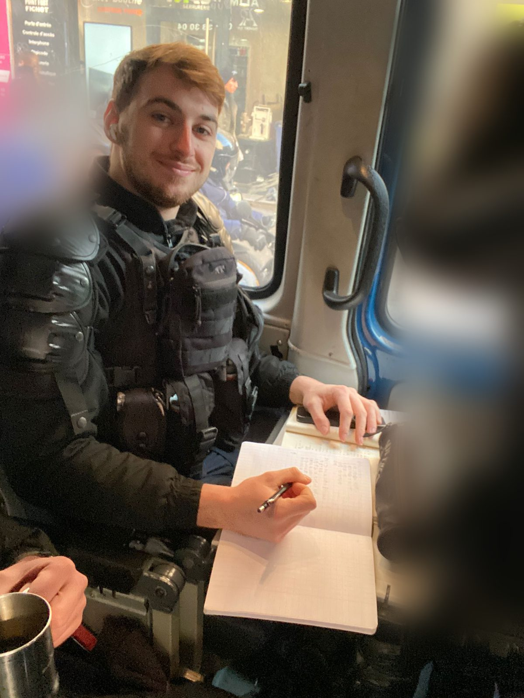

Sous-officier de gendarmerie
Gendarmerie nationale · gendarmerie mobile
Patrouilles et maintien de l'ordre en milieux sensibles, déplacements de longue durée en Guyane et en Nouvelle-Calédonie : quatre ans à agir sous pression, à encadrer et à appliquer des procédures strictes.

- Période
- Déc. 2019 – juil. 2023
- Lieu
- Guéret, missions en métropole et outre-mer
- Rôle
- Sous-officier, gendarmerie mobile
Missions
- Patrouille et maintien de l'ordre en milieux sensibles, avec des déplacements de longue durée, jusqu'à 4 mois en outre-mer (Guyane, Nouvelle-Calédonie).
- Encadrement jusqu'à 30 opérateurs dans un environnement à forts enjeux de sécurité ; supervision et planification d'entraînements pour la cohésion d'équipe.
- Décisions autonomes en situation critique et sous forte pression, pour la continuité des opérations et la sécurité des personnels.
- Référent traçabilité : fiabilité des rapports et respect strict des procédures internes.
- Extractions judiciaires de détenus sensibles, encadrement d'élèves en école de gendarmerie, présentation de la gendarmerie mobile aux jeunes.
Pourquoi une reconversion ?
J'ai aimé le terrain, l'équipe et le sens du service. Il me manquait une stimulation intellectuelle. Ma passion pour le sport et mon appétence pour les sciences m'ont conduit vers la bio-ingénierie, avec une envie intacte : être utile, au plus près des personnes.
Ce que j'en retiens
Le calme et la méthode quand la sécurité est en jeu, la communication claire avec des interlocuteurs très différents (hiérarchie, partenaires civils, équipes) et une culture de la procédure et de la traçabilité, que je retrouve aujourd'hui dans la qualité et le réglementaire.
Compétences mobilisées
- Leadership
- Cohésion d'équipe
- Décision sous pression
- Procédures strictes
- Traçabilité & conformité
- Communication
- Pédagogie
- Gestion de conflit